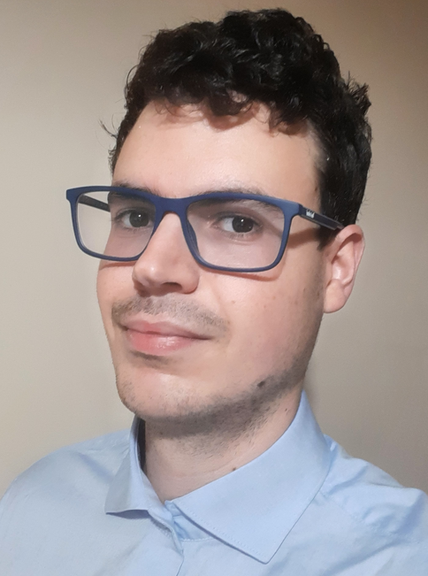

About Me
I am a Mechanical Engineer who graduated from University of Aveiro in Portugal. The field areas where I excel at are Desing Engineering using CAD/CAE tools such as CATIA V5, CAE Finite Element Simulations mostly in Abaqus (Structural Dynamics) and Ansys (Fluid Dynamics) and also Process Optimisation using Programming tools such as Python and MATLAB scripts. My best work surges upon the application of my programming and automation knowledge towards maximising the efficiency and efficacy of processes.
My mission is to optimise engineering procedures with the goal of developing the best products, in the best way.
At a very young age I developed a special connection with vehicles, more specifically racing cars, through Colin McRae Rallying video games and small model cars. That special connection with racing cars helped me developed a feeling towards engineering. In my perspective, engineers were the heroes behind the scenes building the cars, and thus, I decided to become myself a Mechanical Engineer and learn the core concepts behind design engineering, mechanics and physics. I applied for Mechanical Engineering at University of Aveiro which covers many different areas of studies, from physics to thermodynamics, to fluid dynamics, mechanical dynamics and industrial automation. I became a member of a racing team named "Motochanics-UA" which develops racing motorcycle prototypes to participate in the MotoStudent competition. I worked in the aerodynamics department for two years, where I worked in the design, optimisation and CFD simulation of the motorcycle bodywork. I enhanced my skills in Solidworks and Ansys Fluent in many motorcycle design studies, eventually reaching a feasible design for manufacturing model that would reduce the drag coefficient of previous models by 10%. I have then applied my CFD skills into reducing pressure drop in the motorcycle's exhaust system, optimising both for weight reduction, pressure drop and noise reduction (to comply with regulations).
When it comes to develop and test design prototypes, I take the inniative to try and build new design concepts to analyse possible performance outcomes, using CAD design and FEM tools to simulate working conditions. Incorporating my knowledge in automation, I often find programming solutions that help me generate and simulate many different models. My Master's Degree thesis appplied optimisation algorithms into generating and simulating many different parameterized models in Abaqus while the results would be uploaded to a script on MATLAB to process the output data.
Currently I am employed at YAZAKI Portugal, where I am developing CATIA V5 applications for complete customizable technical drawings of electrical harnesses. Currently the program takes about 2 min for choosing the electrical harness parameters and 1.5 min to run the macro, creating: project folder, parts used, assembly product desing, technical 2D drawing for Customer and for Manufacturing Plant, Bill of Materials and a report. I am also participating on the development of an Internal Database, which will comunicate with my CATIA V5 application.